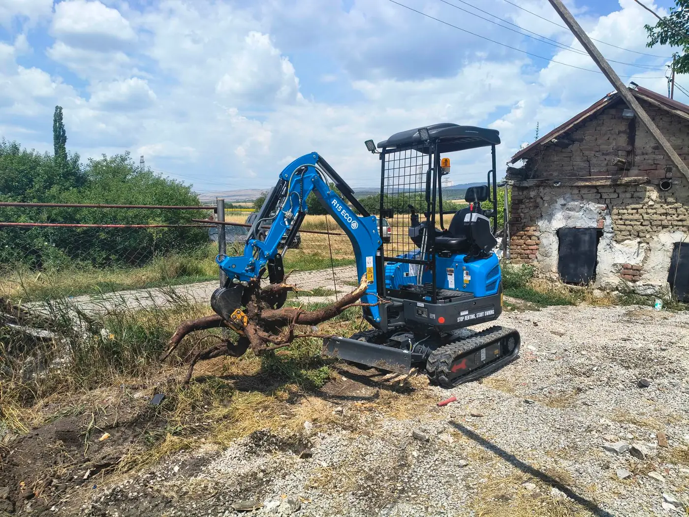

Минибагер в Мрамор — изкопи близо до базата
Услуги с минибагер в с. Мрамор: огради, дренаж, ВиК канали, подравняване. Rippa R15 Eco с гумени вериги. Доставка от Костинброд — често безплатна при цял ден.

Мрамор е удобен обект за нас: малко разстояние от Костинброд, много частни парцели и огради, където голяма техника е излишна или неудобна.
Терен
Преобладават дворни изкопи върху обработваема или вече нивелирана почва. При камъни в основата комбинираме кофа и при нужда чук — казваме го предварително след кратко описание на обекта.
Какво правим в Мрамор
- Ивици за огради и дупки за колове
- Дренажни канали и отводняване
- Подравняване преди настилка или трева
- Разбиване на стари бетонови пътеки
Доставка и цени
Доставка на минибагера: включена при цял ден. Изкоп 200–230 € / 8 ч. С чук 250–270 €. Извозването на материали е за клиента.
Услуги в Мрамор
- Изкопи за канали и шахти
- Изкопи за огради и дупки за колове
- Дренаж и ВиК
- Подравняване на терен
- Свредел 150 мм
- Хидравличен чук
- Хидравличен палец
Цени за Мрамор
Изкоп / планиране: 200–230 € / смяна. С чук: 250–270 €. Минимум половин ден: 100–120 €.
Доставка на минибагера: включена при цял ден (Мрамор е в зоната до 15 км). Пълна таблица: Цени.